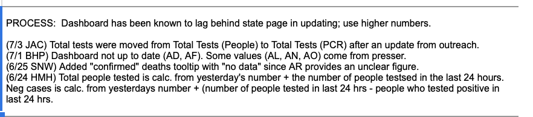
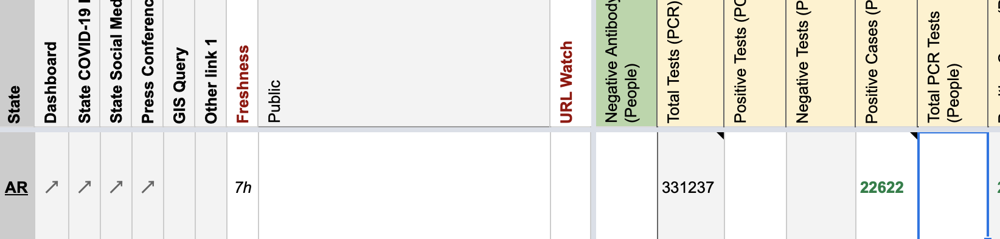

[AR] SVP Historicals and WS2
We have been recording AR’s Total Tests as “Total PCR Tests (people)”, however we received information from outreach that they are (partly) specimens. Need to move values to column “Total Tests (PCR).”
See — AR 6/26 SvP Update — in Slack for details.
Comments
Before we move the column, a couple concerns: (a) Before 5/15, the column is calculated via formula. Are there really supposed to be formulas on States Daily? (b) From 5/12 to 5/14, the formula adds “Positive Cases (PCR)” to Negatives. This doesn’t seem like something we want to put in “Positive Tests (PCR)” © Before 5/12, the formula is Positives + Negatives.
This issue has been automatically marked as stale because it has not had recent activity. It will be closed if no further activity occurs. Thank you for your contributions!
This issue has been closed because it was stale for 15 days, and there was no further activity on it for 10 days. You can feel free to re-open it if the issue is important, and label it as “not stale.”
I updated WS2 (source note was also moved).  